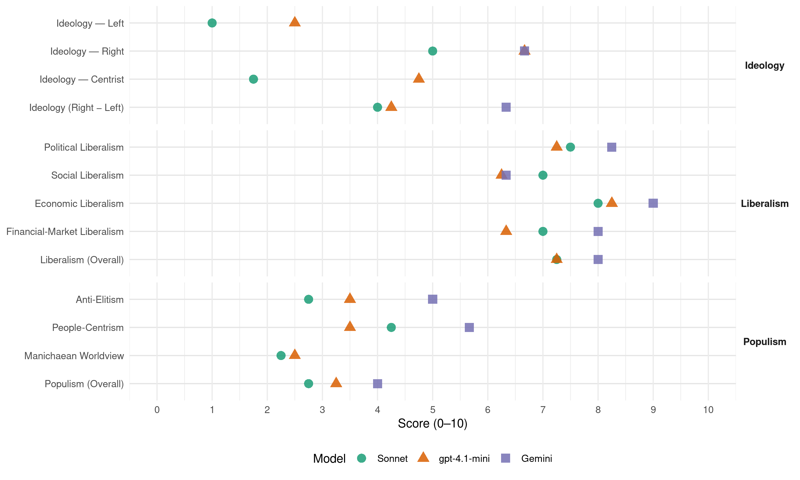

FrP (Norway, 2009)
manifesto_id 12951_200909
Get full text: This site shows derived annotations and short verbatim quotes only. The full manifesto text is © Manifesto Project / WZB — obtain it via manifesto-project.wzb.eu using the manifesto_id above.
Headline scores
| Dimension | Sonnet | gpt-4.1-mini | Gemini |
|---|---|---|---|
| Populism (Overall) | 2.8 | 3.2 | 4.0 |
| Anti-Elitism | 2.8 | 3.5 | 5.0 |
| People-Centrism | 4.2 | 3.5 | 5.7 |
| Manichaean Worldview | 2.2 | 2.5 | – |
| Ideology (Right − Left) | 4.0 | 4.2 | 6.3 |
| Liberalism (Overall) | 7.2 | 7.2 | 8.0 |
| Political Liberalism | 7.5 | 7.2 | 8.2 |
| Social Liberalism | 7.0 | 6.2 | 6.3 |
| Economic Liberalism | 8.0 | 8.2 | 9.0 |
| Financial-Market Liberalism | 7.0 | 6.3 | 8.0 |
Evidence per dimension
Economic Liberalism
Gemini · score 9.0 · verified · chunk 1
“markedsøkonomi der den enkelte og næringslivet fritt”
opprette en forvaltningsdomstol markedSØkonomi Fremskrittspartiet arbeider for markedsøkonomi der den enkelte og næringslivet fritt kan operere innenfor generelle rammebetingelser trukket opp
Gemini · score 9.0 · verified · chunk 2
“innføre markedsøkonomi, . samt ved å åpne opp for fritt salg”
forebygges. . dette gjøres best gjennom å innføre markedsøkonomi, . samt ved å åpne opp for fritt salg av fattige lands landbruksprodukter
Gemini · score 9.0 · verified · chunk 3
“et fritt marked for bøker”
målene nås best gjennom et fritt marked for bøker, samt mer målrettede tiltak for spesielt
Gemini · score 9.0 · verified · chunk 4
“målene nås best gjennom et fritt marked”
viktige. . målene nås best gjennom et fritt marked for bøker, samt mer målrettede tiltak
gpt-4.1-mini · score 8.0 · verified · chunk 1
“Fremskrittspartiet arbeider for markedsøkonomi der den enkelte og næringslivet fritt kan operere”
Fremskrittspartiet arbeider for markedsøkonomi der den enkelte og næringslivet fritt kan operere innenfor generelle rammebetingelser trukket opp av myndighetene. . et velfungerende marked innebærer at forbrukerne i all hovedsak styrer tilbudet gjennom sin etterspørsel.
gpt-4.1-mini · score 8.0 · verified · chunk 2
“frihandel er den beste form for global arbeidsdeling”
Frihandel er den beste form for global arbeidsdeling med gjensidige fordeler av samhandel. . norge bør derfor snarest bygge ned handelsbarrierene mot utlandet.
gpt-4.1-mini · score 8.0 · verified · chunk 3
“vi ønsker at det skal innføres valgfrihet knyttet til rehabiliteringsinstitusjoner”
en god og fullverdig rehabiliteringstjeneste må bygge på samspillet mellom offentlige, private og ideelle organisasjoner, slik at den totale kapasiteten og kompetansen til enhver tid blir utnyttet. . vi ønsker at det skal innføres valgfrihet knyttet til rehabiliteringsinstitusjoner, der pasient i samråd med sin lege skal kunne velge blant de institusjonene som har et adekvat tilbud, uavhengig om disse er offentlig eller privat drevet.
gpt-4.1-mini · score 9.0 · verified · chunk 4
“hovedmålet er sterk nedsettelse av skatter, avgifter og offentlige inngrep”
Fremskrittspartiet er et liberalistisk folkeparti. . det bygger på norges grunnlov, norsk og vestlig tradisjon og kulturarv, med basis i det kristne livssyn og humanistiske verdier. hovedmålet er sterk nedsettelse av skatter, avgifter og offentlige inngrep.
Sonnet · score 8.0 · verified · chunk 1
“liberalisere økonomien for å skape større vekst”
Fremskrittspartiet vil: liberalisere økonomien for å skape større vekst og mer velferd
Sonnet · score 7.0 · verified · chunk 2
“Frihandel er den beste form for global arbeidsdeling”
Forholdene til andre land må bygge på prinsippene om likeverd og frihandel. Frihandel er den beste form for global arbeidsdeling med gjensidige fordeler av samhandel. norge bør derfor snarest bygge ned handelsbarrierene mot utlandet
Sonnet · score 9.0 · verified · chunk 3
“etablere et markedsstyrt transportmarked”
lov- og forskriftsendringene som er nødvendige for å etablere et markedsstyrt transportmarked
Sonnet · score 8.0 · verified · chunk 4
“målene nås best gjennom et fritt marked for bøker”
de offentlige litteraturpolitiske mål om styrket, variert og kvalitetspreget norsk skriftkultur. målene nås best gjennom et fritt marked for bøker, samt mer målrettede tiltak
Financial-Market Liberalism
Gemini · score 8.0 · verified · chunk 1
“uavhengig, effektivt og kompetent kredittilsyn”
sikre fattige lands markedsadgang til Norge sikre et uavhengig, effektivt og kompetent kredittilsyn fiNaNSpolitikk og peNgepolitikk Finanspolitikk handler om
Gemini · score 8.0 · verified · chunk 2
“fri bevegelse av kapital, virksomhet og mennesker”
knyttet til åpenhet, frivillighet og fri bevegelse av kapital, virksomhet og mennesker på global basis, ser vi en rekke
gpt-4.1-mini · score 7.0 · verified · chunk 1
“sikre et uavhengig, effektivt og kompetent kredittilsyn”
Fremskrittspartiet vil: liberalisere økonomien for å skape større vekst og mer velferd ha effektive tiltak for å sikre mer konkurranse jobbe for mer frihandel sikre fattige lands markedsadgang til Norge sikre et uavhengig, effektivt og kompetent kredittilsyn
gpt-4.1-mini · score 6.0 · verified · chunk 2
“åpne for privat fangetransport for å frigjøre politiressurser”
Fremskrittspartiet vil: fjerne soningskøen ved å bygge flere soningsplasser og åpne for private tilbydere sende utenlandske borgere ut av landet og la dem sone straffen i hjemlandet fremforhandle utleveringsavtaler åpne for privat fangetransport for å frigjøre politiressurser at ettervern skal tilbys i hensiktsmessige former åpne for kjøp av soningsplasser i utlandet at dømte går direkte fra rettskraftig dom til soning gjennomgå ankesystemet
gpt-4.1-mini · score 6.0 · verified · chunk 3
“renter på studielån settes lik markedsrenten”
renter på studielån settes lik markedsrenten. studenter ved private fagskoler og høyere utdanningsinstitusjoner bør kunne få omgjort til stipend den delen av studielånet som gjelder skolepengene eller studieavgiften, etter samme modell som gjelder for norske studenter i utlandet.
Sonnet · score 7.0 · verified · chunk 1
“sikre et uavhengig, effektivt og kompetent kredittilsyn”
jobbe for mer frihandel sikre fattige lands markedsadgang til Norge sikre et uavhengig, effektivt og kompetent kredittilsyn
Sonnet · score 6.0 · verified · chunk 2
“fri bevegelse av kapital, virksomhet og mennesker”
selv om det er store utfordringer knyttet til åpenhet, frivillighet og fri bevegelse av kapital, virksomhet og mennesker på global basis, ser vi en rekke positive utviklingstrekk innenfor regionale områder
Sonnet · score 8.0 · verified · chunk 3
“renter på studielån settes lik markedsrenten”
studiefinansieringen bør legges om slik at hardt arbeidende studenter belønnes. renter på studielån settes lik markedsrenten
Sonnet · score 7.0 · verified · chunk 4
“utløse mest mulig privat kapital”
så lenge det finnes støtteordninger til produksjon av film, skal disse ha som formål å nå et størst mulig publikum og utløse mest mulig privat kapital
Political Liberalism
Gemini · score 8.0 · verified · chunk 1
“folket gjennom folkeavstemninger skal gis adgang”
teller likt, uten hensyn til hvor i landet den er avgitt . vi vil også at folket gjennom folkeavstemninger skal gis adgang til å avgjøre viktige politiske saker. . stemmeretten
Gemini · score 8.0 · verified · chunk 2
“uavhengig av regjering og Storting”
at politi- og påtalemyndighet i enkeltsaker skal utøve sine plikter uavhengig av regjering og Storting at politi og påtalemyndighet skal
Gemini · score 8.0 · verified · chunk 3
“en forutsetning for demokratiet, ytringsfriheten og rettsstaten”
en fri og uavhengig presse er en forutsetning for demokratiet, ytringsfriheten og rettsstaten. . For å sikre konkurranse og mangfold
Gemini · score 9.0 · verified · chunk 4
“forutsetning for demokratiet, ytringsfriheten og rettsstaten”
en fri og uavhengig presse er en forutsetning for demokratiet, ytringsfriheten og rettsstaten.
gpt-4.1-mini · score 7.0 · verified · chunk 1
“domstolene skal sikre rask og rettferdig behandling”
Fremskrittspartiet legger vekt på å sikre enkeltmennesket rettssikkerhet. . domstolene skal sikre rask og rettferdig behandling. . dette er også viktig for å unngå at personer sitter i varetekt over lang tid.
gpt-4.1-mini · score 7.0 · verified · chunk 2
“rettssikkerhet”
Fremskrittspartiet legger vekt på å sikre enkeltmennesket rettssikkerhet. . domstolene skal sikre rask og rettferdig behandling. . dette er også viktig for å unngå at personer sitter i varetekt over lang tid.
gpt-4.1-mini · score 7.0 · verified · chunk 3
“en fri og uavhengig presse er en forutsetning for demokratiet”
en fri og uavhengig presse er en forutsetning for demokratiet, ytringsfriheten og rettsstaten. . For å sikre konkurranse og mangfold i mediene vil vi arbeide for størst mulig grad av etableringsfrihet i medienæringen.
gpt-4.1-mini · score 8.0 · verified · chunk 4
“en fri og uavhengig presse er en forutsetning for demokratiet”
en fri og uavhengig presse er en forutsetning for demokratiet, ytringsfriheten og rettsstaten. . For å sikre konkurranse og mangfold i mediene vil vi arbeide for størst mulig grad av etableringsfrihet i medienæringen.
Sonnet · score 7.0 · verified · chunk 1
“folkeavstemninger skal gis adgang til å avgjøre”
vi vil også at folket gjennom folkeavstemninger skal gis adgang til å avgjøre viktige politiske saker
Sonnet · score 7.0 · verified · chunk 2
“politi og påtalemyndighet skal være klart atskilt”
at politi- og påtalemyndighet i enkeltsaker skal utøve sine plikter uavhengig av regjering og Storting at politi og påtalemyndighet skal være klart atskilt fra hverandre for å oppnå uavhengighet og best mulig rettssikkerhet
Sonnet · score 8.0 · verified · chunk 3
“en fri og uavhengig presse er en forutsetning for demokratiet”
en fri og uavhengig presse er en forutsetning for demokratiet, ytringsfriheten og rettsstaten
Sonnet · score 8.0 · verified · chunk 4
“en fri og uavhengig presse er en forutsetning for demokratiet”
en fri og uavhengig presse er en forutsetning for demokratiet, ytringsfriheten og rettsstaten. For å sikre konkurranse og mangfold i mediene
Liberalism (Overall)
Gemini · score 8.0 · verified · chunk 1
“markedsøkonomi der den enkelte og næringslivet fritt”
opprette en forvaltningsdomstol markedSØkonomi Fremskrittspartiet arbeider for markedsøkonomi der den enkelte og næringslivet fritt kan operere innenfor generelle rammebetingelser trukket opp
Gemini · score 7.0 · verified · chunk 2
“fri bevegelse av kapital, virksomhet og mennesker”
knyttet til åpenhet, frivillighet og fri bevegelse av kapital, virksomhet og mennesker på global basis, ser vi en rekke
Gemini · score 8.0 · verified · chunk 3
“Fremskrittspartiet er et liberalistisk folkeparti”
fremSkrittSpartietS SametingSprogram 2009-2013 Fremskrittspartiet er et liberalistisk folkeparti. . det bygger på norges grunnlov
Gemini · score 9.0 · verified · chunk 4
“målene nås best gjennom et fritt marked”
viktige. . målene nås best gjennom et fritt marked for bøker, samt mer målrettede tiltak
gpt-4.1-mini · score 7.0 · verified · chunk 1
“Fremskrittspartiet arbeider for markedsøkonomi der den enkelte og næringslivet fritt kan operere”
Fremskrittspartiet arbeider for markedsøkonomi der den enkelte og næringslivet fritt kan operere innenfor generelle rammebetingelser trukket opp av myndighetene. . et velfungerende marked innebærer at forbrukerne i all hovedsak styrer tilbudet gjennom sin etterspørsel.
gpt-4.1-mini · score 7.0 · verified · chunk 2
“Frihandel er den beste form for global arbeidsdeling”
Frihandel er den beste form for global arbeidsdeling med gjensidige fordeler av samhandel. . norge bør derfor snarest bygge ned handelsbarrierene mot utlandet.
gpt-4.1-mini · score 7.0 · verified · chunk 3
“en fri og uavhengig presse er en forutsetning for demokratiet”
en fri og uavhengig presse er en forutsetning for demokratiet, ytringsfriheten og rettsstaten. . For å sikre konkurranse og mangfold i mediene vil vi arbeide for størst mulig grad av etableringsfrihet i medienæringen.
gpt-4.1-mini · score 8.0 · verified · chunk 4
“hovedmålet er sterk nedsettelse av skatter, avgifter og offentlige inngrep”
Fremskrittspartiet er et liberalistisk folkeparti. . det bygger på norges grunnlov, norsk og vestlig tradisjon og kulturarv, med basis i det kristne livssyn og humanistiske verdier. hovedmålet er sterk nedsettelse av skatter, avgifter og offentlige inngrep.
Sonnet · score 7.0 · verified · chunk 1
“liberalisere økonomien for å skape større vekst”
Fremskrittspartiet vil: liberalisere økonomien for å skape større vekst og mer velferd
Sonnet · score 6.0 · verified · chunk 2
“Frihandel er den beste form for global arbeidsdeling”
Forholdene til andre land må bygge på prinsippene om likeverd og frihandel. Frihandel er den beste form for global arbeidsdeling med gjensidige fordeler av samhandel. norge bør derfor snarest bygge ned handelsbarrierene mot utlandet
Sonnet · score 8.0 · verified · chunk 3
“Fremskrittspartiet er et liberalistisk folkeparti”
Fremskrittspartiet er et liberalistisk folkeparti. det bygger på norges grunnlov, norsk og vestlig tradisjon
Sonnet · score 8.0 · verified · chunk 4
“troen på, og respekten for, det enkelte menneskets egenart”
det fundamentale i vårt samfunnssyn er troen på, og respekten for, det enkelte menneskets egenart, og retten til å bestemme over eget liv og økonomi
Anti-Elitism
Gemini · score 4.0 · verified · chunk 1
“veien fra folk flest til makten”
og sitt eget lokalmiljø. . veien fra folk flest til makten på stortinget og i regjeringskvartalene er
Gemini · score 6.0 · verified · chunk 4
“flytte makt fra politikere og byråkrati”
som et viktig virkemiddel for å flytte makt fra politikere og byråkrati til innbyggerne.
gpt-4.1-mini · score 6.0 · verified · chunk 1
“makt og innflytelse på få hender”
dagens utstrakte offentlige eierskap konsentrerer makt og innflytelse på få hender. . politisk styring av bedrifter hemmer langsiktig tenkning og verdiskaping.
gpt-4.1-mini · score 3.0 · verified · chunk 2
“det offentlige bør gis anledning til å leie inn privatpraktiserende advokater”
i stand til raskt å kunne følge opp de sakene som er ferdig etterforsket av politiet. . vi mener at det offentlige bør gis anledning til å leie inn privatpraktiserende advokater til å føre straffesaker for å få avviklet den store saksmengden. . vi mener det er uakseptabelt at straffesaker med kjent gjerningsmann henlegges på grunn av kapasitetsproblemer.
gpt-4.1-mini · score 2.0 · verified · chunk 3
“arbeidet for å avsløre dem som misbruker velferdsordningene”
arbeidet for å avsløre dem som misbruker velferdsordningene og som bidrar til å undergrave det velferdssystemet som er bygget opp i norge, må intensiveres. . stadig flere lever av offentlige overføringer i norge, noe som fører til at mye av arbeidskraften ikke blir utnyttet.
gpt-4.1-mini · score 3.0 · verified · chunk 4
“det offentlige skal ikke ta på seg oppgaver som like godt kan løses av enkeltpersoner”
det offentlige skal ikke ta på seg oppgaver som like godt kan løses av enkeltpersoner, bedrifter og organisasjoner. vi vil bruke statlig differensiert stykkprisfinansiering av offentlig finansierte tjenester som et viktig virkemiddel for å flytte makt fra politikere og byråkrati til innbyggerne.
Sonnet · score 3.0 · verified · chunk 1
“andre partier skal ta til fornuften”
vi har ikke tid til å vente på at andre partier skal ta til fornuften. derfor vil Fremskrittspartiet i regjering nå
Sonnet · score 2.0 · verified · chunk 2
“Befolkningen mister tillit til rettsstaten”
soningskøen rammer domfelte, ofre og samfunnet for øvrig. Befolkningen mister tillit til rettsstaten når gjerningsmenn, også etter alvorlige forbrytelser, kan gå fritt rundt
Sonnet · score 2.0 · verified · chunk 3
“unødvendig politisk innblanding når det kommer til regulering”
det må ikke være unødvendig politisk innblanding når det kommer til regulering av gen- og bioteknologien
Sonnet · score 4.0 · verified · chunk 4
“flytte makt fra politikere og byråkrati til innbyggerne”
vi vil bruke statlig differensiert stykkprisfinansiering av offentlig finansierte tjenester som et viktig virkemiddel for å flytte makt fra politikere og byråkrati til innbyggerne
Ideology — Centrist
gpt-4.1-mini · score 6.0 · verified · chunk 1
“individet må være utgangspunktet for all god politikk”
individet må være utgangspunktet for all god politikk, og poenget med demokrati og markedsøkonomi er at enkeltmennesket skal ha makt og innflytelse over sin egen hverdag og sitt eget lokalmiljø.
gpt-4.1-mini · score 4.0 · verified · chunk 2
“enkeltmenneskets frihet og selvråderett som en vesentlig målsetting”
Fremskrittspartiet har enkeltmenneskets frihet og selvråderett som en vesentlig målsetting. . virkemidler i arbeidet for å nå dette målet er reduksjon eller avskaffelse av hindringer for menneskets utfoldelse, virketrang og realisering av egne mål.
gpt-4.1-mini · score 4.0 · verified · chunk 3
“enkeltmennesket har hovedansvaret for å sørge for seg og sine nærmeste”
Fremskrittspartiet mener enkeltmennesket har hovedansvaret for å sørge for seg og sine nærmeste. . det offentlige skal ha et sikkerhetsnett for dem som ikke er i stand til å greie seg selv.
gpt-4.1-mini · score 5.0 · verified · chunk 4
“vår politikk bygger på folkestyre, med desentralisert politisk makt”
vår politikk bygger på folkestyre, med desentralisert politisk makt og avgjørelse i folkevalgte organer , samt å lovfeste bindende folkeavstemninger som en del av vårt konstitusjonelle system.
Sonnet · score 2.0 · verified · chunk 1
“folk flest i deres hverdag”
vi må sikre trygge og verdige forhold for folk flest i deres hverdag
Sonnet · score 1.0 · verified · chunk 2
“enkeltmenneskets frihet og selvråderett som en vesentlig målsetting”
Fremskrittspartiet har enkeltmenneskets frihet og selvråderett som en vesentlig målsetting. virkemidler i arbeidet for å nå dette målet er reduksjon eller avskaffelse av hindringer
Sonnet · score 2.0 · verified · chunk 3
“Fremskrittspartiet er et liberalistisk folkeparti”
Fremskrittspartiet er et liberalistisk folkeparti. det bygger på norges grunnlov, norsk og vestlig tradisjon
Sonnet · score 2.0 · verified · chunk 4
“et liberalistisk folkeparti”
Fremskrittspartiet er et liberalistisk folkeparti. det bygger på norges grunnlov, norsk og vestlig tradisjon og kulturarv
Ideology — Left
gpt-4.1-mini · score 3.0 · verified · chunk 1
“subsidiering av bestemte næringer og bedrifter skaper stort spillerom for særinteresser”
Fremskrittspartiet vil gjennom store skatte- og avgiftslettelser gjøre bedriftene i stand til å klare seg på egen hånd uten offentlige subsidier og andre overføringer. . subsidiering av bestemte næringer og bedrifter skaper stort spillerom for særinteresser og bidrar til uoversiktlighet, ustabilitet og mer administrasjon.
gpt-4.1-mini · score 2.0 · verified · chunk 2
“stille krav for tildeling av offentlige ytelser”
Fremskrittspartiet vil: sørge for et sikkerhetsnett for dem som ikke kan klare seg selv stille krav for tildeling av offentlige ytelser stille krav om deltakelse i kvalifiseringsprogram eller annen aktivitet for mottakere av økonomisk sosialhjelp innføre normerte satser for økonomisk sosialhjelp som er tilnærmet like over hele landet overføre det økonomiske ansvaret for økonomisk sosialhjelp til NAV/staten
gpt-4.1-mini · score 3.0 · verified · chunk 3
“vi aksepterer omfordeling gjennom folketrygden”
alle norske borgere skal ha rett til ytelser fra folketrygden. . vi aksepterer omfordeling gjennom folketrygden. Fremskrittspartiet vil: at folketrygden skal være et nasjonalt forsikringssystem at alle norske borgere skal ha rett til ytelser fra folketrygden ved behov at det skal skje en omfordeling gjennom folketrygden
gpt-4.1-mini · score 2.0 · verified · chunk 4
“hovedmålet er sterk nedsettelse av skatter, avgifter og offentlige inngrep”
Fremskrittspartiet er et liberalistisk folkeparti. . det bygger på norges grunnlov, norsk og vestlig tradisjon og kulturarv, med basis i det kristne livssyn og humanistiske verdier. hovedmålet er sterk nedsettelse av skatter, avgifter og offentlige inngrep.
Sonnet · score 1.0 · verified · chunk 1
“redusere det offentlige eierskapet”
en målsetting i vår økonomiske politikk er derfor å bygge ned det offentlige eierskapet gjennom salg
Sonnet · score 1.0 · verified · chunk 2
“Frihandel er den beste form for global arbeidsdeling”
Forholdene til andre land må bygge på prinsippene om likeverd og frihandel. Frihandel er den beste form for global arbeidsdeling med gjensidige fordeler av samhandel
Sonnet · score 1.0 · verified · chunk 3
“vi aksepterer omfordeling gjennom folketrygden”
alle norske borgere skal ha rett til ytelser fra folketrygden. vi aksepterer omfordeling gjennom folketrygden
Sonnet · score 1.0 · verified · chunk 4
“Gradvis redusere subsidier til reindrift”
Fremskrittspartiet vil: Gradvis redusere subsidier til reindrift. Arbeide for en fornuftig ressursforvaltning av offentlige beitemarker.
Ideology (Right − Left)
Gemini · score 6.0 · verified · chunk 1
“stramme inn innvandringen til norge”
optimalt.vårt program viser hvordan vi vil gi mer frihet til folk flest, gjennom lavere skatter og avgifter, og hvordan vi vil forenkle lover og regler som i dag styrer våre liv og våre valg. du vil også kunne lese om hvordan vi vil gi mer trygghet til folk flest gjennom å styrke politiet, både gjennom flere stillinger og bedre utstyr. vi mener at det er viktig å stramme inn innvandringen til norge, slik at vi på en bedre måte kan
Gemini · score 8.0 · verified · chunk 2
“mottak av mennesker fra land utenfor den vestlige kulturkrets begrenses kraftig”
Fremskrittspartiet vil: at Norges mottak av mennesker fra land utenfor den vestlige kulturkrets begrenses kraftig. . Dette omfatter flyktninger, asylsøkereog
Gemini · score 5.0 · verified · chunk 4
“norsk og vestlig tradisjon og kulturarv”
det bygger på norges grunnlov, norsk og vestlig tradisjon og kulturarv, med basis i det kristne
gpt-4.1-mini · score 6.0 · verified · chunk 1
“individet må være utgangspunktet for all god politikk”
individet må være utgangspunktet for all god politikk, og poenget med demokrati og markedsøkonomi er at enkeltmennesket skal ha makt og innflytelse over sin egen hverdag og sitt eget lokalmiljø.
gpt-4.1-mini · score 4.0 · verified · chunk 2
“enkeltmenneskets frihet og selvråderett som en vesentlig målsetting”
Fremskrittspartiet har enkeltmenneskets frihet og selvråderett som en vesentlig målsetting. . virkemidler i arbeidet for å nå dette målet er reduksjon eller avskaffelse av hindringer for menneskets utfoldelse, virketrang og realisering av egne mål.
gpt-4.1-mini · score 3.0 · verified · chunk 3
“enkeltmennesket har hovedansvaret for å sørge for seg og sine nærmeste”
Fremskrittspartiet mener enkeltmennesket har hovedansvaret for å sørge for seg og sine nærmeste. . det offentlige skal ha et sikkerhetsnett for dem som ikke er i stand til å greie seg selv.
gpt-4.1-mini · score 4.0 · verified · chunk 4
“det offentlige skal ikke ta på seg oppgaver som like godt kan løses av enkeltpersoner”
det offentlige skal ikke ta på seg oppgaver som like godt kan løses av enkeltpersoner, bedrifter og organisasjoner. vi vil bruke statlig differensiert stykkprisfinansiering av offentlig finansierte tjenester som et viktig virkemiddel for å flytte makt fra politikere og byråkrati til innbyggerne.
Sonnet · score 6.0 · verified · chunk 1
“stramme inn innvandringen til norge”
vi mener at det er viktig å stramme inn innvandringen til norge, slik at vi på en bedre måte kan håndtere integreringen
Sonnet · score 4.0 · verified · chunk 2
“Norges mottak av mennesker fra land utenfor den vestlige kulturkrets begrenses kraftig”
Fremskrittspartiet vil: at Norges mottak av mennesker fra land utenfor den vestlige kulturkrets begrenses kraftig. Dette omfatter flyktninger, asylsøkere og de som gis opphold av humanitære årsaker
Sonnet · score 2.0 · verified · chunk 3
“liberalistisk folkeparti”
Fremskrittspartiet er et liberalistisk folkeparti. det bygger på norges grunnlov, norsk og vestlig tradisjon
Sonnet · score 4.0 · verified · chunk 4
“norsk og vestlig tradisjon og kulturarv”
det bygger på norges grunnlov, norsk og vestlig tradisjon og kulturarv, med basis i det kristne livssyn og humanistiske verdier
Ideology — Right
Gemini · score 7.0 · verified · chunk 1
“stramme inn innvandringen til norge”
optimalt.vårt program viser hvordan vi vil gi mer frihet til folk flest, gjennom lavere skatter og avgifter, og hvordan vi vil forenkle lover og regler som i dag styrer våre liv og våre valg. du vil også kunne lese om hvordan vi vil gi mer trygghet til folk flest gjennom å styrke politiet, både gjennom flere stillinger og bedre utstyr. vi mener at det er viktig å stramme inn innvandringen til norge, slik at vi på en bedre måte kan
Gemini · score 8.0 · verified · chunk 2
“mottak av mennesker fra land utenfor den vestlige kulturkrets begrenses kraftig”
Fremskrittspartiet vil: at Norges mottak av mennesker fra land utenfor den vestlige kulturkrets begrenses kraftig. . Dette omfatter flyktninger, asylsøkereog
Gemini · score 5.0 · verified · chunk 4
“norsk og vestlig tradisjon og kulturarv”
det bygger på norges grunnlov, norsk og vestlig tradisjon og kulturarv, med basis i det kristne
gpt-4.1-mini · score 7.0 · verified · chunk 1
“strammere kurs i innvandringspolitikken vil også gagne den folkelige forståelsen”
en strammere kurs i innvandringspolitikken vil også gagne den folkelige forståelsen for de mange lovlydige utlendingers tilstedeværelse.
gpt-4.1-mini · score 7.0 · verified · chunk 2
“innvandrere som kommer fra områder med stor sykdomsrisiko”
at innvandrere og asylsøkere som kommer fra områder med stor sykdomsrisiko gjennomgår en obligatorisk helsetest NorDmeNN i UtlaNDet Fremskrittspartiet konstaterer at mange, og stadig flere, nordmenn velger å flytte permanent eller bo lengre tid i utlandet.
gpt-4.1-mini · score 6.0 · verified · chunk 4
“sametinget er et politisk organ som ikke er i tråd med Fremskrittspartiets demokratiske prinsipper”
sametinget er et politisk organ som ikke er i tråd med Fremskrittspartiets demokratiske prinsipper. . dette er et organ der stemmerett og valgbarhet utelukkende er basert på etnisk tilhørighet.
Sonnet · score 7.0 · verified · chunk 1
“stramme inn innvandringen til norge”
vi mener at det er viktig å stramme inn innvandringen til norge, slik at vi på en bedre måte kan håndtere integreringen
Sonnet · score 5.0 · verified · chunk 2
“Norges mottak av mennesker fra land utenfor den vestlige kulturkrets begrenses kraftig”
Fremskrittspartiet vil: at Norges mottak av mennesker fra land utenfor den vestlige kulturkrets begrenses kraftig. Dette omfatter flyktninger, asylsøkere og de som gis opphold av humanitære årsaker
Sonnet · score 3.0 · verified · chunk 3
“integrasjon av uttrykk fra andre kulturer bør foregå i et naturlig tempo”
Fremskrittspartiet ønsker å ivareta norsk kultur og kulturarv. integrasjon av uttrykk fra andre kulturer bør foregå i et naturlig tempo
Sonnet · score 5.0 · verified · chunk 4
“norsk og vestlig tradisjon og kulturarv”
det bygger på norges grunnlov, norsk og vestlig tradisjon og kulturarv, med basis i det kristne livssyn og humanistiske verdier
Manichaean Worldview
gpt-4.1-mini · score 3.0 · verified · chunk 1
“Kampen mot kriminelle innvandrere må skjerpes”
Kampen mot kriminelle innvandrere må skjerpes. . Kriminalitet som utøves av utlendinger, gir lovlydige innvandrere et dårlig renommé.
gpt-4.1-mini · score 3.0 · verified · chunk 2
“terrorisme og trusler fra naboland”
Fremskrittspartiet mener det er viktig å bygge allianser med likesinnede land og støtte opp om demokratiske staters rett til å forsvare seg mot terrorisme og trusler fra naboland. . vi støtter det jødiske folks rett til et nasjonalt hjemland i israel.
gpt-4.1-mini · score 2.0 · verified · chunk 3
“arbeidet for å avsløre dem som misbruker velferdsordningene”
arbeidet for å avsløre dem som misbruker velferdsordningene og som bidrar til å undergrave det velferdssystemet som er bygget opp i norge, må intensiveres. . stadig flere lever av offentlige overføringer i norge, noe som fører til at mye av arbeidskraften ikke blir utnyttet.
gpt-4.1-mini · score 2.0 · verified · chunk 4
“vi tar avstand fra enhver form for totalitær og autoritær statsmakt”
vi tar avstand fra enhver form for totalitær og autoritær statsmakt og ideologier som sikter mot dette , og stiller oss svært kritiske til enhver overføring av myndighet fra borgerne til det offentlige.
Sonnet · score 3.0 · verified · chunk 1
“dette er originalen, dette er programmet”
mange snakker om Fremskrittspartiets politikk. dette er originalen, dette er programmet vi vil arbeide for å få gjennomført
Sonnet · score 2.0 · verified · chunk 2
“det etisk uforsvarlig å ikke stramme inn”
det er grunn til å frykte at en fortsatt innvandring av asylsøkere… vil føre til alvorlige motsetninger mellom folkegrupper i norge. det er etisk uforsvarlig å ikke stramme inn denne innvandringen for å forebygge konflikter
Sonnet · score 2.0 · verified · chunk 3
“misbruker velferdsordningene og som bidrar til å undergrave”
arbeidet for å avsløre dem som misbruker velferdsordningene og som bidrar til å undergrave det velferdssystemet
Sonnet · score 2.0 · verified · chunk 4
“avstand fra enhver form for totalitær og autoritær statsmakt”
vi tar avstand fra enhver form for totalitær og autoritær statsmakt og ideologier som sikter mot dette
People-Centrism
Gemini · score 6.0 · verified · chunk 1
“sikre trygge og verdige forhold for folk flest”
vi investerer i fremtiden, må vi sikre trygge og verdige forhold for folk flest i deres hverdag. vårt program viser hvordan
Gemini · score 5.0 · verified · chunk 2
“harmonerer med befolkningens rettsoppfatning”
for mange typer forbrytelser så lavt at det ikke harmonerer med befolkningens rettsoppfatning. . vi ønsker derfor høyere strafferammer
Gemini · score 6.0 · verified · chunk 4
“offentlig støtte bør komme folk flest”
Fremskrittspartiet vil: at offentlig støtte bør komme folk flest til gode og gi et størst mulig
gpt-4.1-mini · score 5.0 · verified · chunk 1
“individet må være utgangspunktet for all god politikk”
individet må være utgangspunktet for all god politikk, og poenget med demokrati og markedsøkonomi er at enkeltmennesket skal ha makt og innflytelse over sin egen hverdag og sitt eget lokalmiljø.
gpt-4.1-mini · score 2.0 · verified · chunk 2
“enkeltmennesket rettssikkerhet”
Fremskrittspartiet legger vekt på å sikre enkeltmennesket rettssikkerhet. . domstolene skal sikre rask og rettferdig behandling. . dette er også viktig for å unngå at personer sitter i varetekt over lang tid.
gpt-4.1-mini · score 3.0 · verified · chunk 3
“enkeltmennesket har hovedansvaret for å sørge for seg og sine nærmeste”
Fremskrittspartiet mener enkeltmennesket har hovedansvaret for å sørge for seg og sine nærmeste. . det offentlige skal ha et sikkerhetsnett for dem som ikke er i stand til å greie seg selv.
gpt-4.1-mini · score 4.0 · verified · chunk 4
“vår politikk bygger på folkestyre, med desentralisert politisk makt”
vår politikk bygger på folkestyre, med desentralisert politisk makt og avgjørelse i folkevalgte organer , samt å lovfeste bindende folkeavstemninger som en del av vårt konstitusjonelle system.
Sonnet · score 6.0 · verified · chunk 1
“gi mer frihet til folk flest”
vårt program viser hvordan vi vil gi mer frihet til folk flest, gjennom lavere skatter og avgifter
Sonnet · score 3.0 · verified · chunk 2
“folks rettsoppfatning enn det som ofte er tilfellet”
vi ønsker høyere strafferammer generelt sett, og en gjennomgang av straffelovgivningen. vi ønsker å innføre minimumsstraff for en del alvorlige lovbrudd for å sikre at domstolene utmåler straffer som er mer i tråd med folks rettsoppfatning enn det som ofte er tilfellet i dag
Sonnet · score 4.0 · verified · chunk 3
“folk flest til gode”
der det offentlige bruker penger på kulturtiltak, er det viktig at pengene kommer folk flest til gode
Sonnet · score 4.0 · verified · chunk 4
“offentlig støtte bør komme folk flest til gode”
at offentlig støtte bør komme folk flest til gode og gi et størst mulig publikum
Populism (Overall)
Gemini · score 4.0 · verified · chunk 1
“veien fra folk flest til makten”
og sitt eget lokalmiljø. . veien fra folk flest til makten på stortinget og i regjeringskvartalene er
Gemini · score 3.0 · verified · chunk 2
“harmonerer med befolkningens rettsoppfatning”
for mange typer forbrytelser så lavt at det ikke harmonerer med befolkningens rettsoppfatning. . vi ønsker derfor høyere strafferammer
Gemini · score 5.0 · verified · chunk 4
“flytte makt fra politikere og byråkrati”
som et viktig virkemiddel for å flytte makt fra politikere og byråkrati til innbyggerne.
gpt-4.1-mini · score 5.0 · verified · chunk 1
“makt og innflytelse på få hender”
dagens utstrakte offentlige eierskap konsentrerer makt og innflytelse på få hender. . politisk styring av bedrifter hemmer langsiktig tenkning og verdiskaping.
gpt-4.1-mini · score 3.0 · verified · chunk 2
“det offentlige bør gis anledning til å leie inn privatpraktiserende advokater”
i stand til raskt å kunne følge opp de sakene som er ferdig etterforsket av politiet. . vi mener at det offentlige bør gis anledning til å leie inn privatpraktiserende advokater til å føre straffesaker for å få avviklet den store saksmengden. . vi mener det er uakseptabelt at straffesaker med kjent gjerningsmann henlegges på grunn av kapasitetsproblemer.
gpt-4.1-mini · score 2.0 · verified · chunk 3
“arbeidet for å avsløre dem som misbruker velferdsordningene”
arbeidet for å avsløre dem som misbruker velferdsordningene og som bidrar til å undergrave det velferdssystemet som er bygget opp i norge, må intensiveres. . stadig flere lever av offentlige overføringer i norge, noe som fører til at mye av arbeidskraften ikke blir utnyttet.
gpt-4.1-mini · score 3.0 · verified · chunk 4
“det offentlige skal ikke ta på seg oppgaver som like godt kan løses av enkeltpersoner”
det offentlige skal ikke ta på seg oppgaver som like godt kan løses av enkeltpersoner, bedrifter og organisasjoner. vi vil bruke statlig differensiert stykkprisfinansiering av offentlig finansierte tjenester som et viktig virkemiddel for å flytte makt fra politikere og byråkrati til innbyggerne.
Sonnet · score 4.0 · verified · chunk 1
“gi mer frihet til folk flest”
vårt program viser hvordan vi vil gi mer frihet til folk flest, gjennom lavere skatter og avgifter
Sonnet · score 2.0 · verified · chunk 2
“folks rettsoppfatning enn det som ofte er tilfellet”
vi ønsker å innføre minimumsstraff for en del alvorlige lovbrudd for å sikre at domstolene utmåler straffer som er mer i tråd med folks rettsoppfatning enn det som ofte er tilfellet i dag
Sonnet · score 2.0 · verified · chunk 3
“folk flest til gode”
der det offentlige bruker penger på kulturtiltak, er det viktig at pengene kommer folk flest til gode
Sonnet · score 3.0 · verified · chunk 4
“flytte makt fra politikere og byråkrati til innbyggerne”
vi vil bruke statlig differensiert stykkprisfinansiering av offentlig finansierte tjenester som et viktig virkemiddel for å flytte makt fra politikere og byråkrati til innbyggerne
Social Liberalism